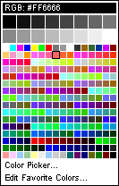
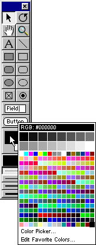
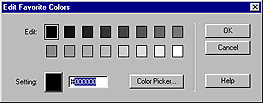

Using Director > Color, Tempo, and Transitions > Controlling color > Choosing colors for movie elements
Using Director > Color, Tempo, and Transitions > Controlling color > Choosing colors for movie elements |
Choosing colors for movie elements
Use the Color menu to choose colors for movie elements such as the Stage, vector shapes, and the foreground and background of sprites. For some elements, such as Stage and sprite colors, you can also enter hexadecimal values for any RGB color. The Color menu displays the colors in the current palette; the 16 larger color chips at the top of the menu identify your favorite colors.

If the movie is set to specify colors as RGB values, choosing a color from the Color menu specifies the RGB value of the color, not its index value. (For an explanation of the difference between index and RGB color, see Specifying palette index and RGB color.) The bar at the top of the Color menu indicates whether the movie is set to RGB or index color.
If you want to choose a color that is not in the current palette (and therefore not available on the Color menu), you can use the system color picker to specify any color. You can also change the set of colors available on the Color menu by displaying a different color palette.
To open the Color menu:
1 |
Do one of the following: |
Select a sprite and display the Sprite tab of the Property Inspector. |
|
Choose Window > Tool Palette. |
|
2 |
Click and hold the mouse button while pointing at the Foreground Color and Background Color buttons.
 |
Note: To open the Color menu in the opposite mode (RGB or index), hold down the Alt key (Windows) or Option key (Macintosh) while clicking the color chip.
To choose colors not on the Color menu:
1 |
Open the Color menu. |
2 |
Click Color Picker. |
3 |
Use the color picker that is displayed to choose colors. |
To edit the favorite colors on the Color menu:
1 |
Open the Color menu. |
2 |
Choose Edit Favorite Colors.
 |
3 |
Choose the color chip you want to change. |
4 |
Choose a new color for the chip using one of the following options: |
Click the color box to open the Color menu and choose a color from the current palette. |
|
Enter an RGB value for a color in the box to the right of the color box. |
|
Click Color Picker and then use the system color picker to specify a new color. |
|
5 |
Click OK. |
To change the color palette displayed on the Color menu:
1 |
Choose Window > Color Palettes or double-click the mouse button on the Foreground Color and Background Color buttons in the Tool palette. |
2 |
Choose a color palette from the Palettes pop-up menu. |